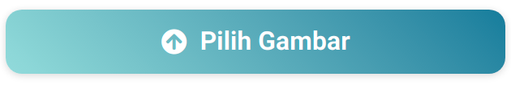
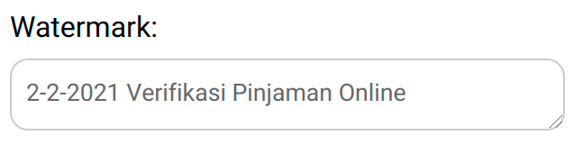
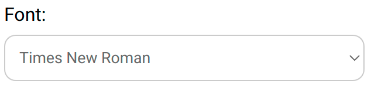
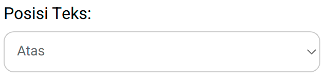
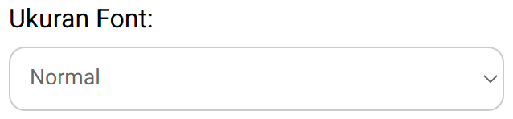
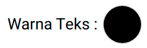
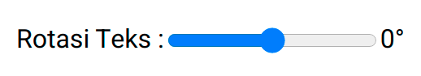
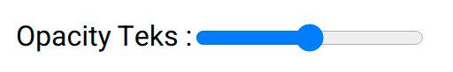
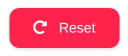
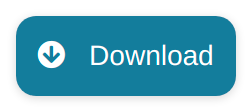

Langkah pertama adalah upload gambar yang ingin diberi watermark dengan menekan tombol "Pilih Gambar" seperti gambar di bawah ini. Gambar yang kamu upload tidak akan dikirim keluar dari perangkat yang kamu gunakan.
Setelah itu, masukan teks watermark yang kamu inginkan di kotak teks. Misalnya, "2-2-2021 Verifikasi Pinjaman Online".
Kamu bisa memilih jenis teks yang kamu suka dengan menginput box "Font" seperti gambar di bawah ini.
Pilih posisi watermark melalui box "Posisi Teks" seperti di bawah ini. Kamu juga bisa memilih posisi dengan cara langsung menekan teks pada box gambar di samping kanan lalu menariknya ke tempat yang kamu inginkan.
Kamu juga bisa memilih ukuran watermark. Pilih salah satu opsi yang ada di box "Ukuran Font".
Setelah itu, pilih warna watermark yang kamu inginkan di opsi "Warna Teks".
Atur rotasi watermark dengan menginput opsi "Rotasi Teks".
Kamu bisa mengatur opasitas Watermark dengan menginput opsi "Opacity Teks".
Jika kamu ingin mengatur ulang watermark yang telah kamu input, gunakan tombol "Reset".
Setelah kamu selesai memberi watermark pada scan KTP mu, tekan tombol "Download" untuk menyimpannya.
Kamu sudah memberi watermark pada scan KTP mu 🎉